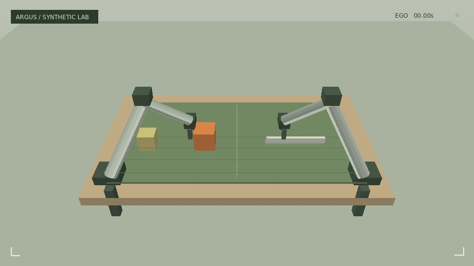
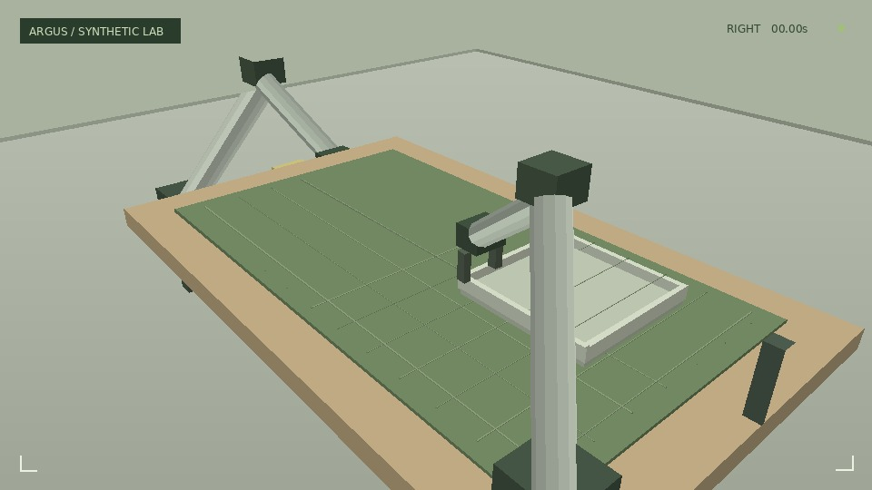

Robotics · Data infrastructure
Multi-camera Capture & Synchronization
An episode collection workspace for egocentric and wrist cameras, with multipart uploads, shared playback, and automatic alignment from recorded audio.



The problem
Independently recorded camera views start at different times. Manual offsets become a bottleneck when the amount of demonstration footage grows.
Implementation
The app stores episode metadata in D1 and originals in R2. A worker extracts audio-onset fingerprints across frequency bands and searches for a distinct correlation peak. The same estimator runs headlessly through FFmpeg. Weak or ambiguous matches are flagged for review.
Evidence
The included synchronization tests recover positive and negative offsets from generated audio, reject silence and repeating signals, and verify that playback remains inside the shared interval. The public repository contains the complete application, upload API, and integration tests.
Limits
Browser playback corrects drift above 120 ms and remains approximate. Audio alignment estimates a constant offset within a five-minute analysis window. The optional optical-flow script is experimental. Original recordings and access keys are excluded.